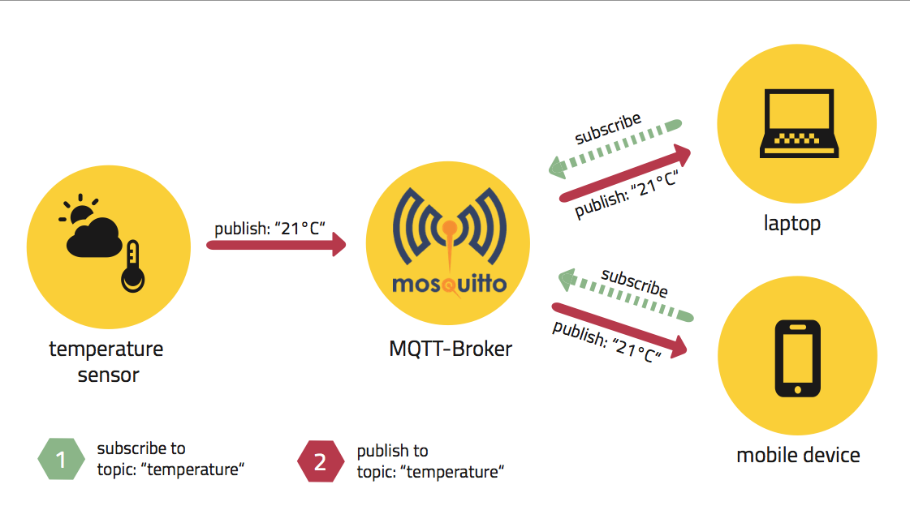
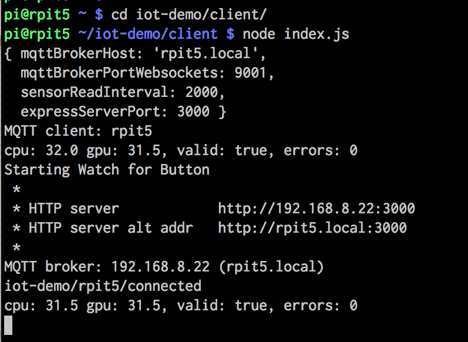

Pi + JS = IoT
https://github.com/idcrook/rpi-iot-demo-2017
January 9, 2017
Internet of Things
“Oh, so they have internet on computers now!” ~Homer Simpson
The Internet of Things (abbreviated as "IoT") refers to ever-growing network of physical objects that feature an IP address and can communicate using the Internet.
Consumer Examples: Weather stations, garage doors, baby monitors, Canary security system, Hue light bulbs, WeMo plugs, Nest thermostat, Amazon Echo ...
Quiz Time
Question: Does anyone know what the “S” in “IoT” stands for?
Answer: Security.
MQTT
'MQTT is a machine-to-machine (M2M)/"Internet of Things" connectivity protocol.'
- "PubSub" model with "Topics". Very simple.
- Low resource requirements at endpoints
- MQTT "Broker" server does most of the work
For our demo:
MQTT Broker is using WebSockets and running on a Pi!
Publish/Subscribe with Topics
rpit5 Temperature:
rpit5 connected -> iot-demo/rpit5/connected
CPU: iot-demo/rpit5/raspi/cputemp °C
GPU: iot-demo/rpit5/raspi/gputemp °C
If MQTT streaming is:
- working: live temperatures will be displayed above.
- disabled: just the topic paths will be displayed, like
iot-demo/rpit5/raspi/cputemp
Raspberry Pi
Raspberry Pi example of a SBC (Single Board Computer)
- run complete, modern operating systems
- small, low-power, low-cost form factors
- include full assortment of connectivity
| SBC | Price |
|---|---|
| RasPi 3 (built-in WiFi, BT) | $35 |
| RasPi Model B (Clearance) | $12 |
| Raspberry Pi Zero | $5 |
| Many more exist | ... |
Pieces of Pi
Raspberry Pi models "B+" or "2" in front of you
- Running Raspbian (Linux) on µSD card
- 5 W power supply (cell-phone charger)
- Wired Ethernet cable
- Pi also talks with onboard 40-pin header
- "breadboard" makes wiring easier
- We'll use some of these pins today!
Demo Preview
- Network and power up Pi
- Chart live-streaming data on webpage
- Wire LEDs to Pi and program
Each Pi shares data using MQTT
Demo Requirements
- Laptop or Smartphone having
- Wi-Fi
- SSH client
- Web browser
- Can share among groups
-
Each station has
- Networked and Powered Pi
- "Pi Pad" mount
- Components
- Wires and Breadboard
Running client
- Connect to Wi-Fi
- SSH into Pi username: pi
- Start node.js, using commands:
password: raspberry
cd iot-demo/client
screen -R
<Enter>
node index.js
Temperature chart: http://name.local:3000
Client output
SSH to Pi
Username:pi
Password:
raspberry
| Name | IP Address |
|---|---|
rpit3 |
192.168.8.23 |
rpit4 |
192.168.8.24 |
rpip5 |
192.168.8.25 |
rpip6 |
192.168.8.26 |
rpip7 |
192.168.8.27 |
rpip8 |
192.168.8.28 |
rpip9 |
192.168.8.29 |
rpip10 |
192.168.8.30 |
<name>.local
Live Dashboard
Live Dashboard, Served from a Pi
(MQTT + WebSockets + SVG + Javascript)

Button and LEDs
Switch presses and LEDs are handled using onoff library.
var button = new Gpio(button_Gpio, 'in', 'both', {debounceTimeout: 20});
var redLed = new Gpio(redLed_Gpio, 'low');
var buttonPressedCount = 0;
button.watch(function (err, value) {
if (value === 0) {
console.log('BUTTON PRESSED!');
// implement a toggle based on button presses
buttonPressedCount += 1;
if (buttonPressedCount % 2) {
client.publish(pubRedLed, 'on', {qos: 1, retain: true});
redLed.writeSync(1); // 1 = on, 0 = off
} else {
client.publish(pubRedLed, 'off', {qos: 1, retain: true});
redLed.writeSync(0); // 1 = on, 0 = off
}
}
}